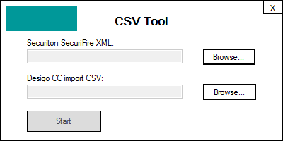

Create the Configuration File
To integrate a SecuriFire panel into Desigo CC, you must first create a configuration (CSV) file that defines the data for the panel that you want to integrate. Then you can use the CSV file to import the configuration. You can create the CSV file in one of the following ways:
Convert the XML Configuration File from SecuriFire
- The SecuriFire XML configuration file is available on the local disk or over the network.
- You copied the SecuriFire_CSV_Converter file on the local disk or over the network. The tool is available in the AdditionalSW folder of the software distribution kit.
- In the DefaultFiles subfolder, copy the template file _Template_for_SecuriFireCSV.csv into a new CSV file. Choose a filename that includes the name of the SecuriFire panel to import.
- Start the XML conversion tool CSVTool.exe.

- In the tool window, browse and select the XLS file and then the new CSV file.
NOTE: Do not select the CSV template file.
- In a few seconds, the CSV file is populated with data extracted from the XML file.
Configure a CSV File Manually
NOTE: You can also convert the XML file and then customize the CSV output to add a hierarchical structure.